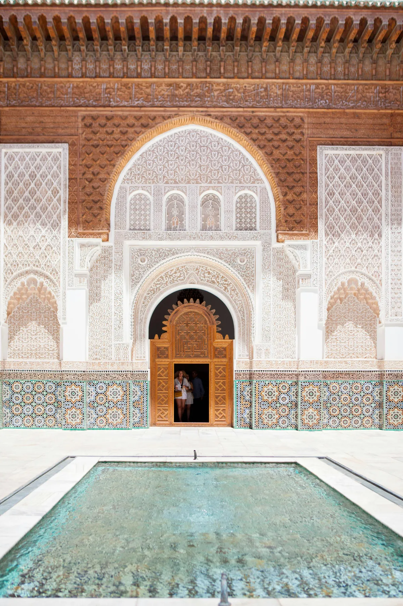
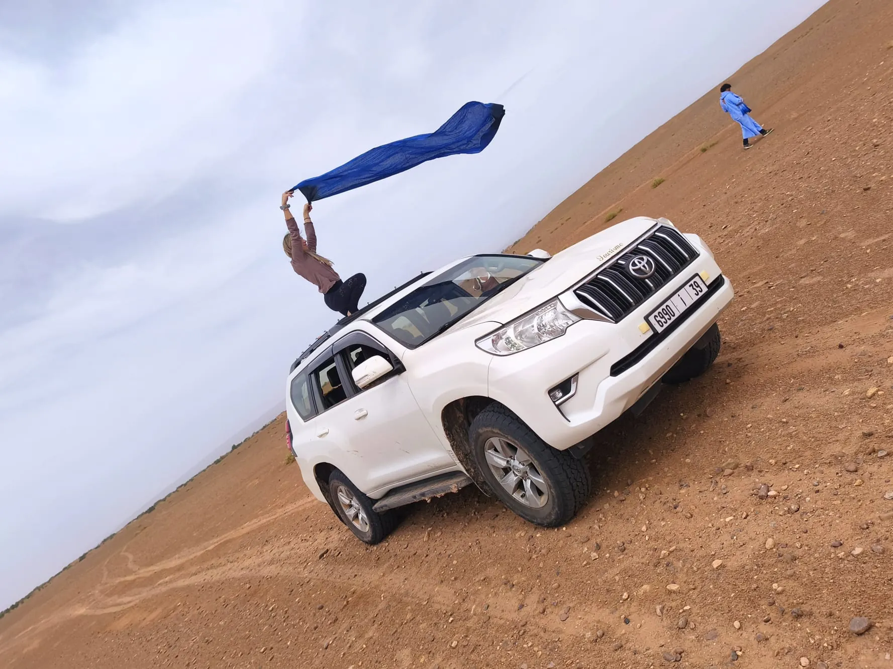

DÍA 1 · Marrakech
Llegar y empezar a mirar
Llegada a Marrakech y bienvenida.
Un primer día para descansar, adaptarse al ritmo del país y comenzar a descubrir la ciudad.
Medina, zocos, un primer té y tiempo para simplemente estar.

8 días · Marrakech · Atlas · Aït Ben Haddou · Oasis de Fint · Erg Chigaga
Una ruta para descubrir algunos de los paisajes que hacen especial al sur de Marruecos y terminar el viaje donde todo se vuelve silencio: Erg Chigaga.
Marrakech, el Alto Atlas, kasbahs, oasis y caminos del sur antes de adentrarnos en el Sahara durante dos noches.
Una buena elección para quienes quieren conocer Marruecos y vivir el desierto en un mismo viaje, sin intentar verlo todo.
Quiero hacer esta ruta ↗
Llegada a Marrakech y bienvenida.
Un primer día para descansar, adaptarse al ritmo del país y comenzar a descubrir la ciudad.
Medina, zocos, un primer té y tiempo para simplemente estar.

Un día para conocer Marrakech a vuestro ritmo.
Podemos descubrir la medina, sus mercados y artesanos, visitar algunos de sus lugares más emblemáticos o reservar tiempo para un hammam, gastronomía o simplemente pasear.

Dejamos atrás Marrakech y cruzamos el Alto Atlas.
El paisaje cambia poco a poco hasta llegar al sur.
Visitaremos Aït Ben Haddou, una de las kasbahs más conocidas de Marruecos, y tendremos tiempo para recorrer sus calles y contemplar el paisaje.

Continuamos hacia el sur entre kasbahs, pueblos de adobe, palmerales y paisajes cada vez más áridos.
Después de llegar a M’Hamid, dejamos el asfalto.
Subimos a los 4x4 y comenzamos a atravesar las pistas que conducen hacia Erg Chigaga.
El horizonte se abre. Y el viaje cambia de ritmo.

Hoy no hay que llegar a ningún sitio.
Amanecer entre las dunas, desayuno, té, caminar por la arena, descansar, conocer las tradiciones del Sahara o simplemente contemplar el paisaje.
Podemos preparar pan bajo la arena, compartir un rato con el equipo, disfrutar de henna o descubrir la música saharaui al caer la tarde.
Y cuando llega la noche: cena, fuego, estrellas y silencio.

Dejamos atrás el desierto y comenzamos el regreso hacia el norte.
El paisaje vuelve a transformarse. La arena da paso a los oasis, los palmerales y las kasbahs.
Llegamos al Oasis de Fint, un pequeño valle escondido entre montañas. Tiempo para caminar, tomar un té y descansar.

Por la mañana podemos disfrutar todavía del oasis antes de emprender el camino hacia Marrakech.
Volvemos a cruzar el Alto Atlas mientras el paisaje cambia por última vez.
Llegada a Marrakech y tiempo para una última cena, un paseo o unas compras.

Desayuno y traslado al aeropuerto.
O, si vuestros vuelos lo permiten, podemos adaptar el final del viaje.
Podemos adaptar el recorrido, la duración, los alojamientos y las experiencias según vuestro tiempo, intereses y forma de viajar.
Hablemos de esta ruta ↗